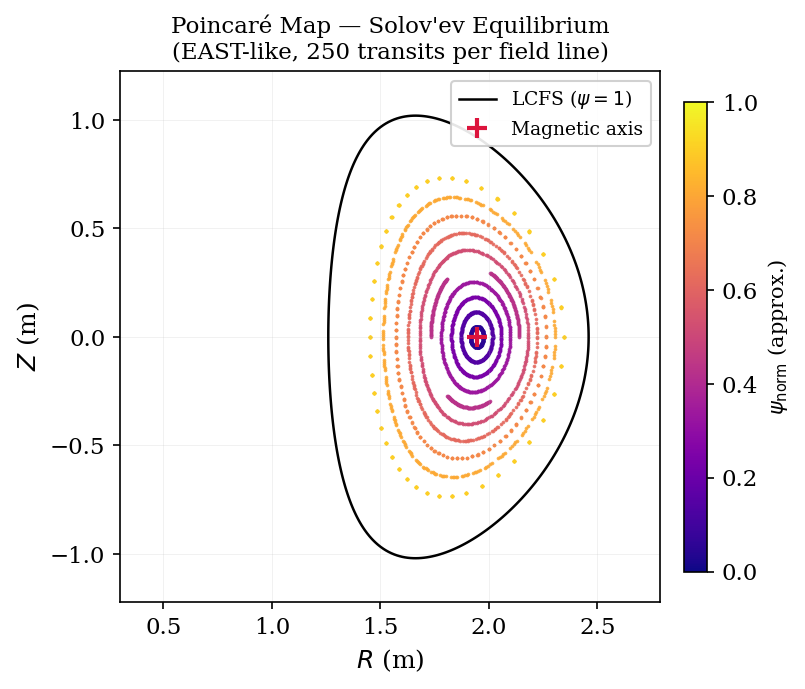

빠른 시작#
이 페이지는 외부 데이터 파일이 필요 없는 단순한 해석적 tokamak 평형을 사용해 pyna 의 세 가지 핵심 기능인 자력선 추적, 푸앵카레 맵, 자기섬 위상 구조를 차례로 보여 줍니다.
Note
모든 예제는 Solov’ev 해석적 평형 (Cerfon & Freidberg 2010)을 사용하며, EAST와 유사한 매개변수(R₀ ≈ 1.86 m, B₀ = 5.3 T)로 스케일합니다. 정확한 Grad-Shafranov 해, 닫힌 형태의 장 성분, 조절 가능한 형상을 갖춘 범용 테스트 베드입니다.
1. 해석적 평형 만들기#
먼저 평형을 import하고 기본 매개변수를 살펴봅니다.
import numpy as np
import matplotlib.pyplot as plt
from pyna.toroidal.equilibrium import solovev_iter_like
eq = solovev_iter_like(scale=0.3) # EAST-like size
Rmaxis, Zmaxis = eq.magnetic_axis
print(f"R0 = {eq.R0:.2f} m a = {eq.a:.2f} m B0 = {eq.B0:.1f} T")
print(f"κ = {eq.kappa:.2f} δ = {eq.delta:.2f} q0 = {eq.q0:.2f}")
print(f"Magnetic axis: R = {Rmaxis:.3f} m, Z = {Zmaxis:.3f} m")
반환된 eq 객체는 eq.BR_BZ(R, Z), eq.Bphi(R),
eq.psi(R, Z) (정규화 flux), eq.q_profile(psi) 를 제공합니다.
2. 자력선 추적과 푸앵카레 교차점 누적#
푸앵카레 단면은 자력선이 선택한 토로이달 단면(여기서는 φ = 0)을 통과할 때마다 (R, Z) 좌표를 기록합니다. 토로이달 회전이 많이 누적되면 중첩된 flux surface가 닫힌 곡선으로 나타나고, 자기섬은 이산적인 단면 점들의 사슬로 나타납니다.
from pyna.flt import FieldLineTracer, get_backend
from pyna.topo.poincare import PoincareAccumulator, poincare_from_fieldlines
from pyna.topo.section import ToroidalSection
# Use the canonical topology section type; ``pyna.topo.poincare`` keeps
# backward-compatible aliases for accumulator-only workflows.
section = ToroidalSection(0.0)
# --- define the ODE right-hand side: dR/dφ, dZ/dφ ---
def field_rhs(phi, RZ):
R, Z = RZ
BR, BZ = eq.BR_BZ(R, Z)
Bphi = eq.Bphi(R)
return [R * BR / Bphi, R * BZ / Bphi]
# --- seed 8 field lines radially outward from the axis ---
R_starts = np.linspace(Rmaxis + 0.05, Rmaxis + 0.45, 8)
Z_starts = np.zeros(8)
# --- integrate 300 toroidal turns per line ---
backend = get_backend('cpu')
flt = FieldLineTracer(field_rhs, backend=backend)
pacc = poincare_from_fieldlines(
field_func=field_rhs,
start_pts=np.column_stack([R_starts, Z_starts, np.zeros_like(R_starts)]),
sections=[section],
t_max=300 * 2 * np.pi,
backend=flt,
)
poincare_pts = [pacc.crossing_array(0)[:, :2]]
# --- plot ---
fig, ax = plt.subplots(figsize=(6, 6))
for Rs, Zs in poincare_pts:
ax.scatter(Rs, Zs, s=0.8, color='steelblue')
ax.set_xlabel('R (m)')
ax.set_ylabel('Z (m)')
ax.set_aspect('equal')
ax.set_title('Poincaré map — Solov\'ev equilibrium')
plt.tight_layout()
plt.show()
{kind=link}

그림 1. Solov’ev 해석적 평형(EAST 유사 매개변수, 자력선당 토로이달 통과 250회)의 푸앵카레 맵입니다. 각 색은 하나의 자력선에 대응하고, 중첩된 닫힌 곡선은 flux surface입니다. 붉은 십자는 자기축을, 검은 곡선은 마지막 닫힌 flux surface(LCFS, ψ = 1)를 나타냅니다.#
각 동심 고리는 flux surface 주위를 감는 하나의 자력선에 대응합니다. q = m/n 유리면은 공명 섭동(예: RMP 코일)이 자기섬을 열 수 있는 위치입니다.
3. 유리면 찾기와 자기섬 측정#
작은 공명 섭동을 더하면 q = 2/1 면에서 자기섬이 열립니다. pyna는 한 번의 호출로 해당 면을 찾고 자기섬 반폭을 측정할 수 있습니다.
from pyna.topo.toroidal_island import locate_rational_surface, island_halfwidth
# Build q(S) from PEST mesh
from pyna.toroidal.coords import build_PEST_mesh
nR, nZ = 100, 100
R_grid = np.linspace(0.3*eq.R0, 1.5*eq.R0, nR)
Z_grid = np.linspace(-eq.a*eq.kappa*1.3, eq.a*eq.kappa*1.3, nZ)
Rg, Zg = np.meshgrid(R_grid, Z_grid, indexing='ij')
BR, BZ = eq.BR_BZ(Rg, Zg)
Bphi = eq.Bphi(Rg)
psi_norm = eq.psi(Rg, Zg)
S, TET, R_mesh, Z_mesh, q_iS = build_PEST_mesh(
R_grid, Z_grid, BR, BZ, Bphi, psi_norm,
Rmaxis, Zmaxis, ns=40, ntheta=181
)
S_values = S[1:]
q_values = q_iS[1:]
print(f"q range: {q_values[0]:.2f} → {q_values[-1]:.2f}")
# Locate q = 2/1 surface
res = locate_rational_surface(S_values, q_values, m=2, n=1)
print(f"q=2/1 surface at S = {res[0]:.4f} (ψ_norm = {res[0]**2:.4f})")
반환되는 S_res 값(S = √ψ_norm)은 공명층의 위치를 정확히 알려 줍니다.
이를 섭동된 푸앵카레 맵과 함께 island_halfwidth 에 전달하면 미터 단위의
자기섬 폭을 얻을 수 있습니다.
4. 일반 유한 차원 동역학#
pyna는 토로이달 자력선에만 한정되지 않습니다. 같은 위상 객체 모델을 해밀토니안 계, N-body 흐름, 맵, SDE 표본 경로에도 사용할 수 있습니다.
import numpy as np
from pyna.dynamics import (
SeparableHamiltonianSystem,
CallableMap,
GeometricBrownianMotion,
)
oscillator = SeparableHamiltonianSystem(
kinetic=lambda p, t: 0.5 * np.dot(p, p),
potential=lambda q, t: 0.5 * np.dot(q, q),
grad_kinetic=lambda p, t: p,
grad_potential=lambda q, t: q,
dof=1,
)
traj = oscillator.trajectory([1.0, 0.0], (0.0, 2*np.pi), dt=0.01)
print(traj.final) # TimeSeriesSolution is a pyna.topo.core.Trajectory
linear_map = CallableMap(lambda x: np.array([2*x[0], 0.5*x[1]]), dim=2)
orbit = linear_map.orbit_geometry([1.0, 1.0], n_iter=5)
print(orbit.period_guess)
gbm = GeometricBrownianMotion(mu=[0.08], sigma=[0.2])
print(gbm.expected_log_growth())
trajectory 또는 map orbit이 표본 데이터에서 기하/위상 객체로 승격된 경우
pyna.topo.core 의 Cycle, PeriodicOrbit, Tube,
IslandChain 같은 객체를 사용합니다.
5. 워크플로 기반 구성#
더 큰 프로젝트와 교육용 notebook에서는 TopologyWorkflow 를 사용해 분석
순서를 명시적으로 유지할 수 있습니다. 이렇게 하면 코드 전체에 임시 생성자를
흩뿌리지 않아도 됩니다.
import numpy as np
from pyna.topo import TopologyWorkflow
from pyna.topo.section import HyperplaneSection
wf = TopologyWorkflow(closure_tol=1e-3)
flow = wf.system(
"callable-flow",
rhs=lambda x, t: np.array([x[1], -x[0]]),
dim=2,
coordinate_names=("q", "p"),
)
section = HyperplaneSection(np.array([1.0, 0.0]), 0.0, phase_dim=2)
pmap = wf.poincare_map(flow, section, dt=0.02)
closed_traj = wf.trajectory(flow, [1.0, 0.0], (0.0, 2*np.pi), dt=0.01)
cycle = wf.closed_cycle(closed_traj)
저수준 adapter, builder, bridge, factory는 라이브러리 작성자가 계속 사용할 수 있지만, 대부분의 notebook은 workflow facade에서 시작하는 것이 좋습니다.
6. 다음 단계#
튜토리얼 — 그림이 포함된 실습 예제: 미니 사례, SDE 몬테카를로 분포, RMP 스텔러레이터 공명 분석, 토카막 평형의 자기 좌표계, RMP 자기섬 폭 검증 – Solov’ev 해석 평형
API 레퍼런스 — 전체 docstring: API 레퍼런스
CUDA 가속 —
cupy-cuda12x를 설치하고 tracer에backend=get_backend('cuda')를 전달하면 자기섬 폭 스캔에서 최대 100× 속도 향상을 얻을 수 있습니다.